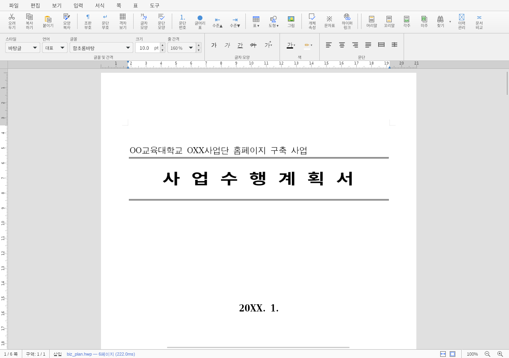
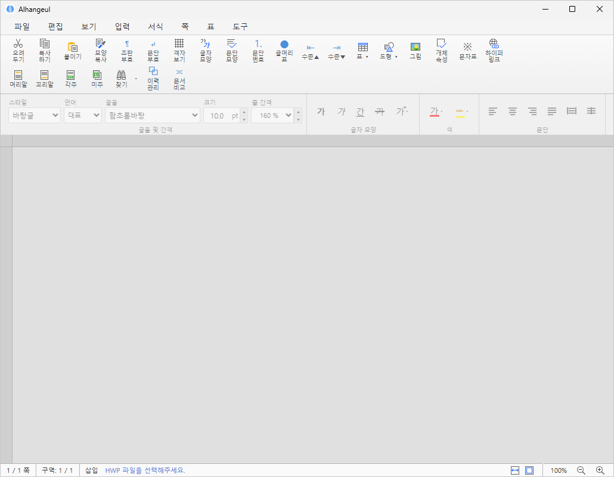

Windows & Linux · Open source
한글 파일은 더 이상 낯선 문서가 아닙니다.
HWP/HWPX 문서를 열고, 편집하고, 저장하세요. 플랫폼과 용도에 맞는 설치 방식을 한곳에서 안내합니다.
플랫폼별 설치 안내
첫 공개 릴리스를 준비하고 있습니다.
Windows x64NSIS · 일반 설치
Windows x64MSI · 관리 배포
Linux x64AppImage · 자동 업데이트
Linux x64DEB · RPM 설치
Linux arm64DEB 설치 안내
공개 전에는 설치 파일 대신 검증 범위와 준비 상태를 안내합니다.

